尺側皮静脈、橈側皮静脈、または上腕静脈を通じて上腕の末梢静脈から挿入し、カテーテル先端が腋窩付近に位置するように留置するカテーテルである。末梢静脈留置カテーテル（PIVC）と末梢挿入型中心静脈カテーテル（PICC）の中間に位置し、患者に合わせた適切なデバイス選択を可能にする。
カテーテル先端は末梢静脈に位置するため、用途等は末梢静脈カテーテルとして取り扱う。
DIVA（difficult intravenous access／静脈確保困難）：血管穿刺において末梢血管内留置に2回以上失敗した場合や、身体検査所見がDIVAを示唆する場合（静脈が見えない・触知できないなど）、患者にDIVAの既往歴や記録がある場合をいう。
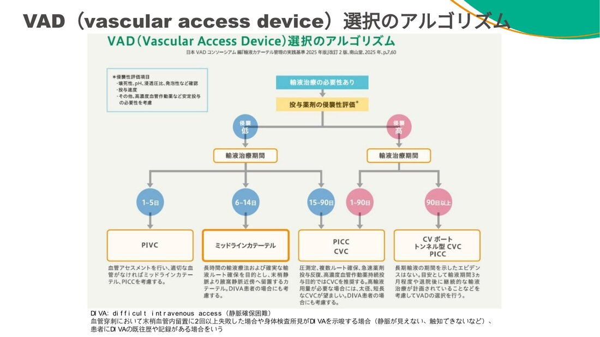
挿入部位は上腕（肘窩より中枢側）を基本とする（上腕に挿入できない場合は、スタッフに確認すること）。
| 推奨血管 | 選択順・注意 |
|---|---|
| 尺側皮静脈 basilic vein | 第一選択。血管径が大きく、神経損傷のリスクが低い。 |
| 上腕頭静脈 cephalic vein | 第二選択。 |
| 上腕動脈伴走静脈 brachial vein | 動脈近接のため注意が必要。 |
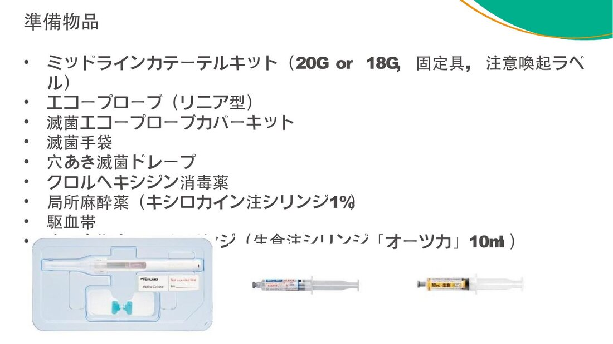
A line挿入時に準じる。
仰臥位、上肢外転・前腕回外。駆血帯を近位上腕上部に装着し、エコーで静脈を同定する。
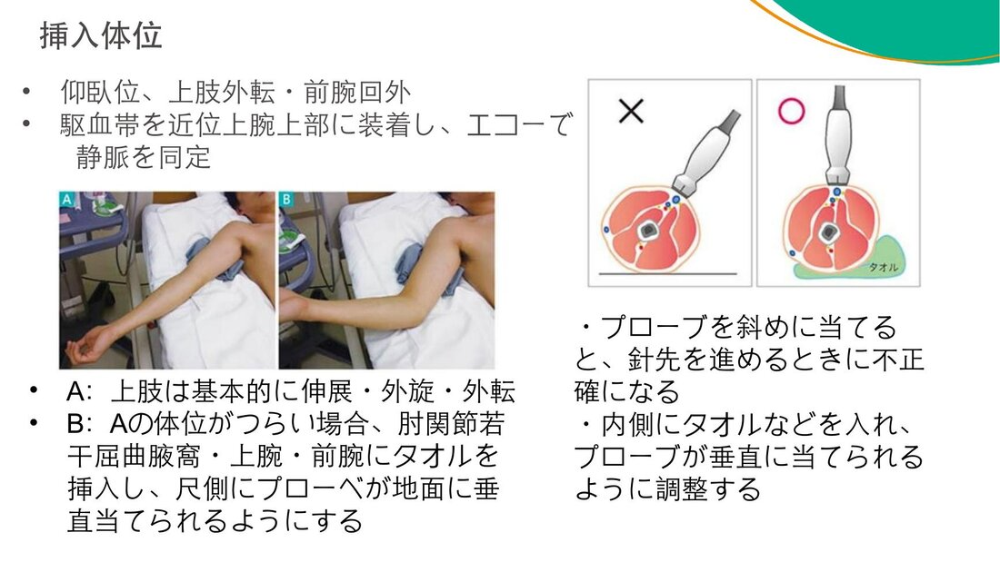
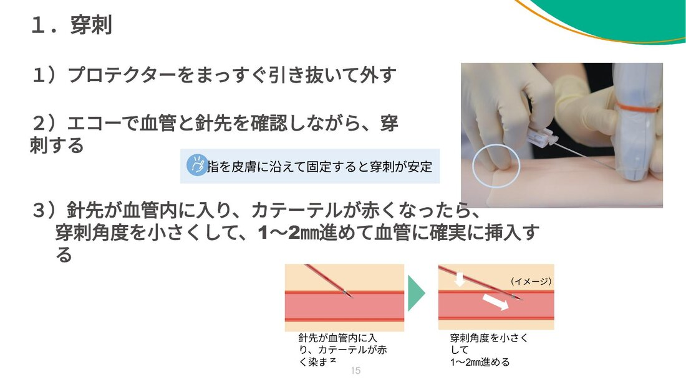
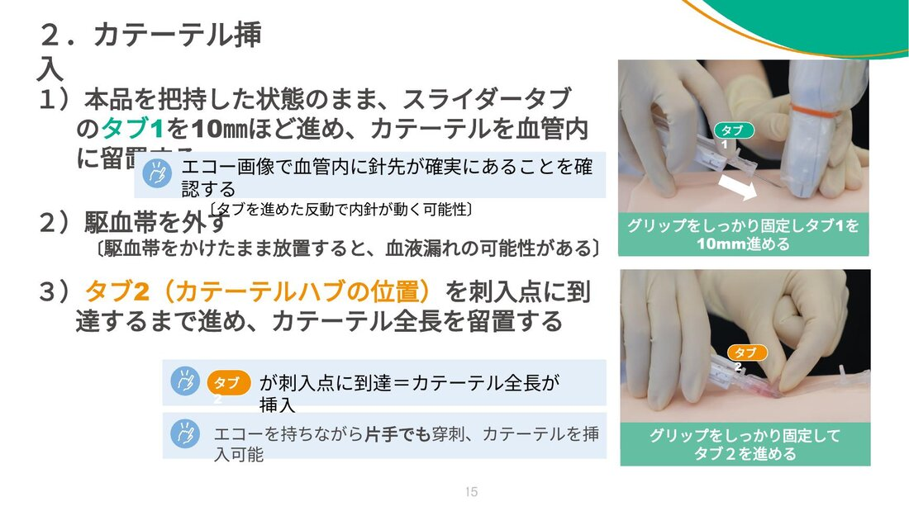
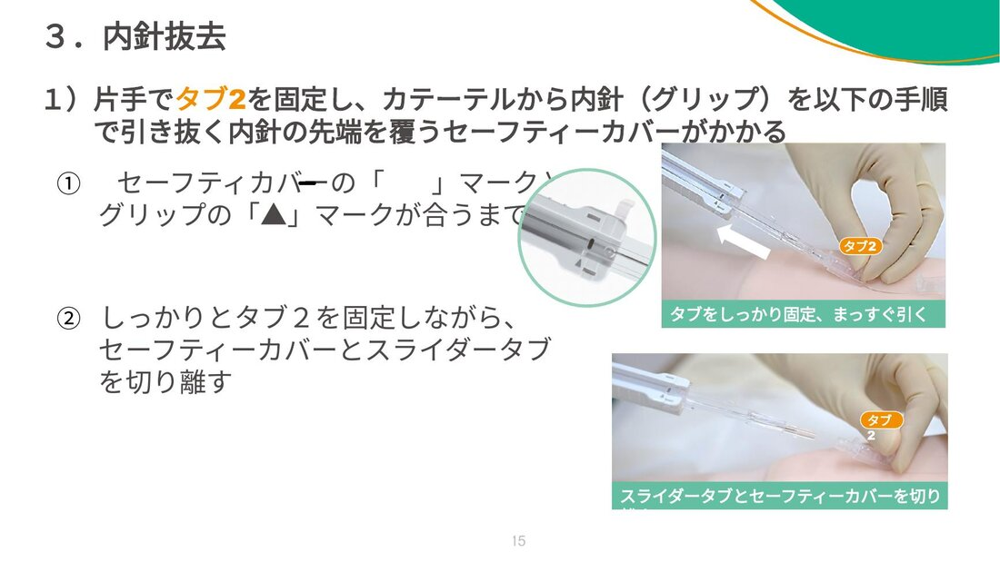
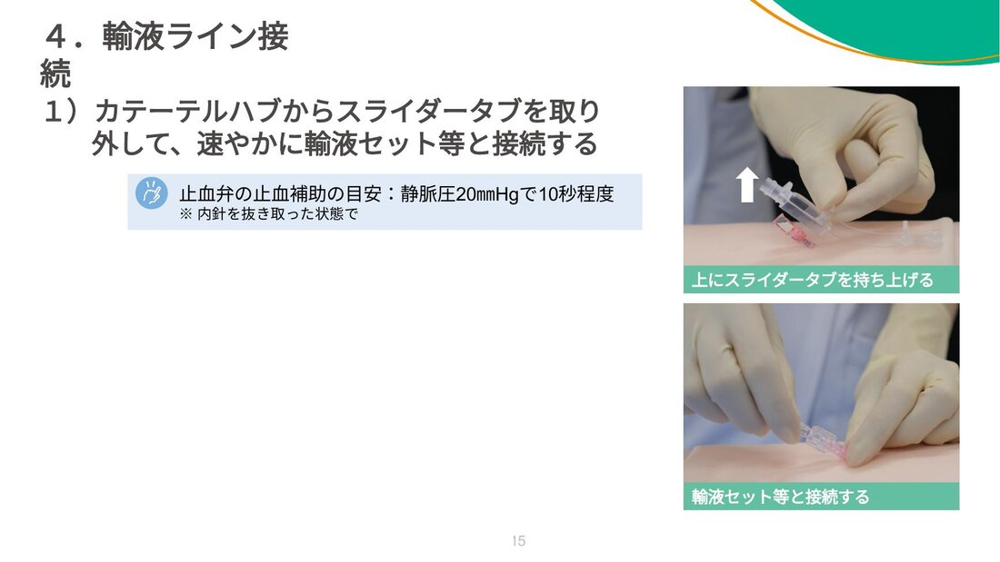
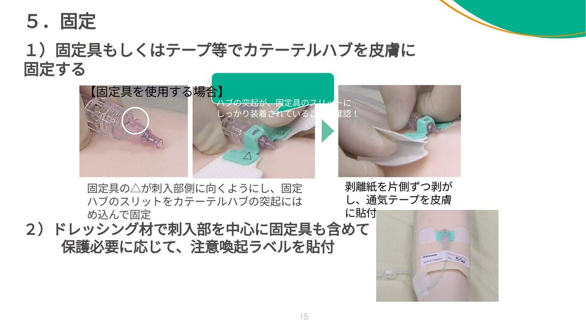
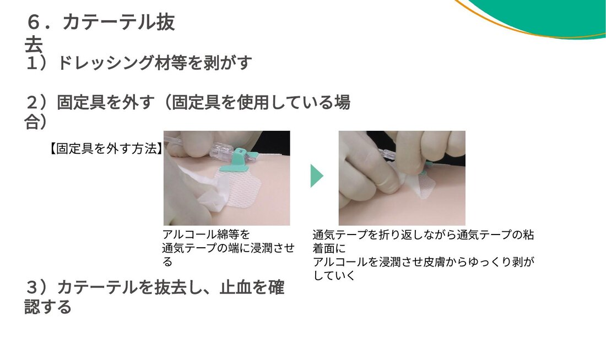
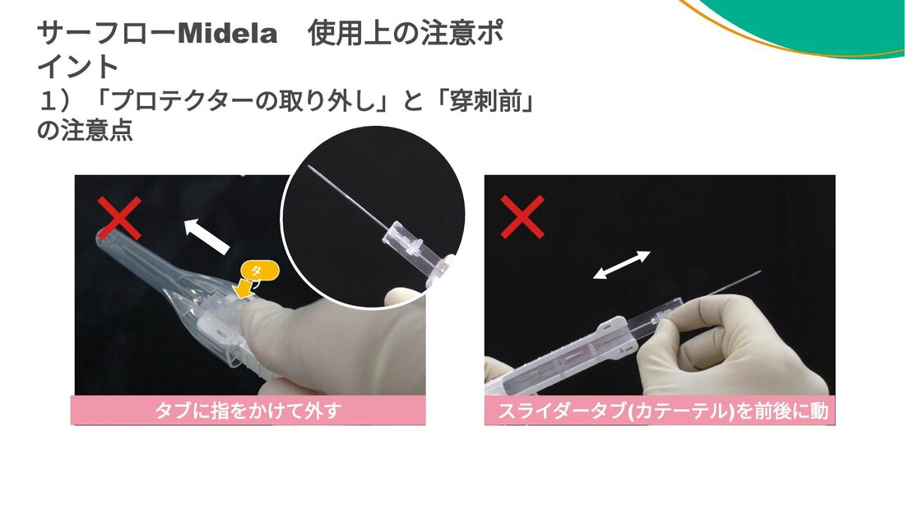
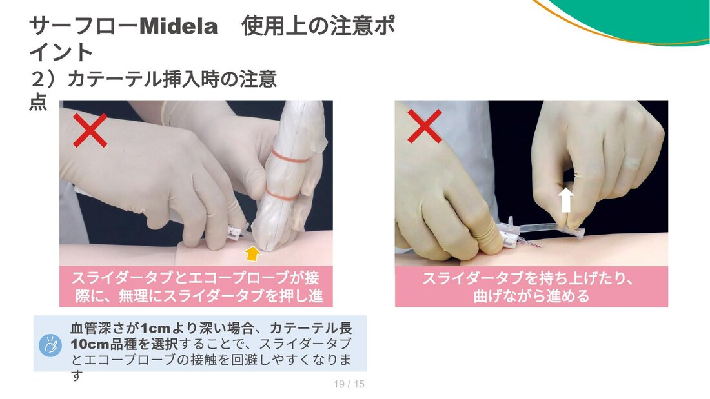
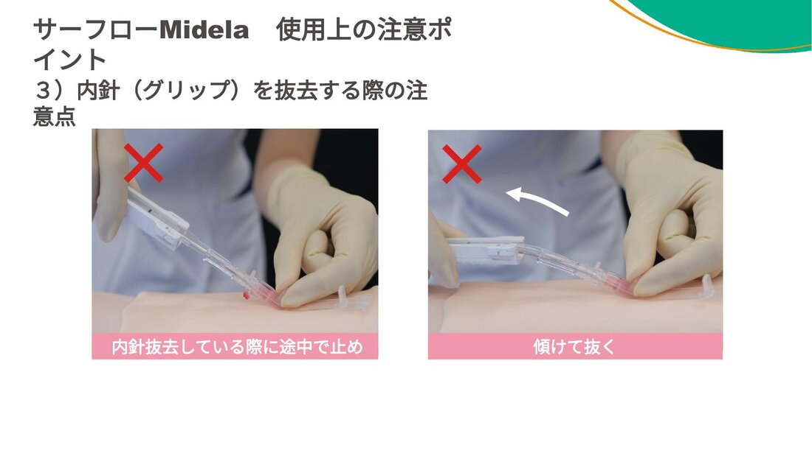
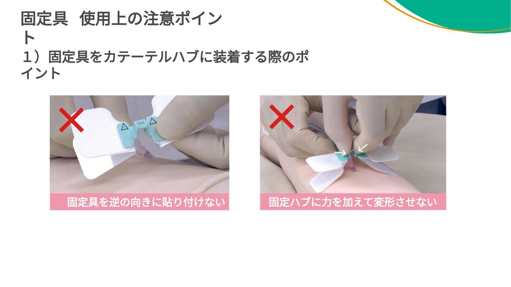
末梢静脈ラインに準ずる。最大留置期間：29日間。
| 事象 | 対応 |
|---|---|
| 血栓症 | 抜去し、必要時エコー検査を実施する。 |
| 感染徴候 | 発赤・硬結・排膿があれば抜去する。 |
| 閉塞 | 生理食塩水でフラッシュを試みる（強制注入は行わない）。 |
| 漏れ 浸潤・血管外漏出 | 直ちに抜去する。 |
| カテーテル逸脱 | 再挿入を検討する。 |
以下は1手技（1ヶ月間継続）あたりの比較。
| PIVC（インサイト） | ミッドライン（Midela） | PICC（パワーPICC） | |
|---|---|---|---|
| 費用合計（月） | 821円 | 6,205円 | 19,261〜20,661円 |
| 償還価格 | なし | 5,790円 | 手術室未使用 |
出典：サーフロー Midela 挿入マニュアル（テルモ株式会社）。本ページは院内資料・製品情報をまとめた教育用のもので、実際の手技は添付文書および指導医の指示に従ってください。
制作：ICU 関谷